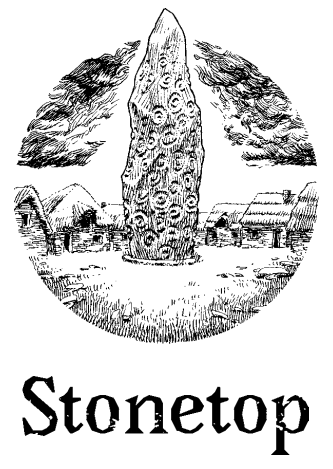
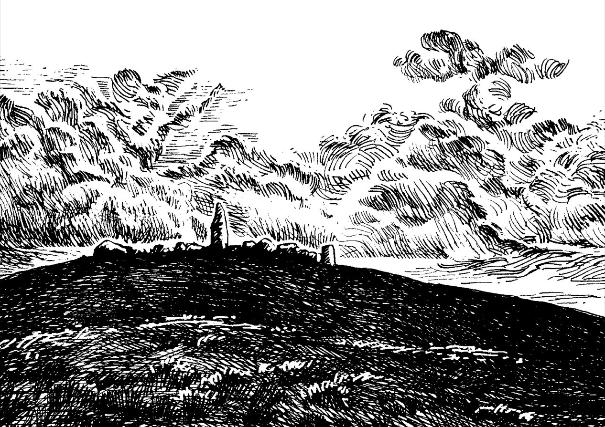

No one knows how the Stone got there, or what the runes cut into its surface might mean. Few even remember how the village sprang up around it. When storms roll up and the Stone pulls lightning from the sky, outsiders cringe and cower. But us? We barely even notice.
We live here, see. This village, Stonetop—it's our home. It's not a glamorous place. Far from it. But we look out for each other. We might not always get along, but we're a community. Everyone contributes. Everyone shares.
And right now, as the first wildflowers bloom in the Flats and the trees bud in the Great Wood, trouble is a-brewing. The world itself is darkening, like the sky before a late-summer storm. Everyone can feel it. Folks are getting scared.
You and me? We're the ones folk look to when they're scared. Like it or not, we're the brave ones. The clever ones. And yeah, sure, the strange ones, too.
These are good people, here in Stonetop. Our kith and our kin.
If we don't step up to protect them, then who will?
You'll play a local hero, someone with deep ties to Stonetop. You might be...
The Blessed (medium complexity): nature priest. Speaks to spirits and beasts. Works subtle magics via sacred markings and materials.
The Fox (low complexity): clever, quick, and skillful. Not above bending the rules or fighting dirty. Can be quite the charmer, too.
The Heavy (low to medium complexity): not just a violent individual—our violent individual. A champion, yes, but a bit of a liability, too.
The Judge (low complexity): settler of disputes, chronicler, and divine bulwark against chaos. Insightful, tough, not necessarily persuasive.
The Lightbearer (high complexity): invokes divine power via flame and candle. Beacon of hope, charity, and mercy. Fiery foe of the dark.
The Marshal (high complexity): leads the town's militia, plus a crew of followers. Makes choices about who lives and who dies.
The Ranger (low complexity): at home in the wild, the one you want with you when you travel. A resourceful guide and deadly hunter.
The Seeker (high complexity): collector of lost lore and power, with potent artifacts that might well lead to their ruin.
The Would-Be Hero (medium complexity): They're in over their head and full of fear and anger, but they just might outshine us all.
An iron-age theater of the mind game with strong narrative elements, wyld magicks, and deadly combat.
Players: 3-5 maximum
Sessions: 3-4 minimum
Rule set: 2d6 Success Roles — Stonetop System
